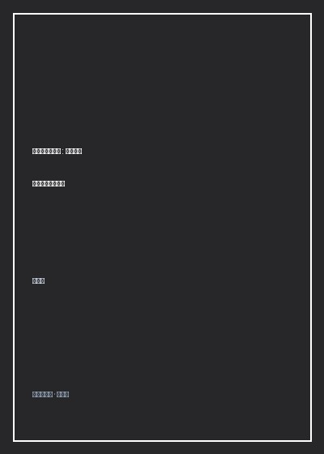

《从零开始学架构》

总体观点
架构设计的本质不是盲目堆砌前沿炫酷技术，而是‘识别并解决系统的核心复杂度’。软件系统的复杂度无外乎源自高性能、高可用、可扩展性、低成本与安全性五个维度。优秀的架构师在动手画图写代码之前，必须首先精准诊断出当前系统面临的最致命瓶颈究竟是什么。
确立架构设计的三大铁律原则：合适优于业界领先、简单优于过度复杂、演化优于一步到位。脱离公司当前业务规模、团队技术储备与成本预算，盲目跟风引入阿里、谷歌级别的超大规模微服务或分布式架构，往往不仅无法解决问题，反而会导致小团队被复杂的运维黑洞活活拖死。
掌握高可用与高性能架构设计的标准套路与权衡取舍。高性能依靠读写分离、分库分表、多级缓存与异步解耦；高可用依靠主备切换、集群冗余、限流降级与熔断隔离；可扩展性依靠微服务合理拆分与规则引擎抽象。架构设计是一门妥协与平衡的艺术，没有银弹，只有取舍。
核心观点
-
1. 复杂度分析是架构设计的指南针
很多工程师架构设计失败是因为‘为了架构而架构’。必须把问题定义清楚：系统到底是因为QPS过高导致数据库CPU打满（高性能），还是因为单点故障导致停机损失惨重（高可用），找准病根才能对症下药。
一个日活仅数千人的企业内部OA审批系统，盲目推行分布式事务Seata与分库分表ShardingSphere，导致原本一个单体应用就能搞定的简单逻辑变得极其难以调试维护。 -
2. 架构三原则：合适、简单、演化
能够用单体+Redis解决的问题就绝不要拆分微服务；能够在单机上支撑的流量就绝不要上分布式集群。好的架构从来不是在设计室里凭空画出来的，而是在真实业务流量一次次冲击中逐步生长迭代出来的。
淘宝网早期架构也是直接买Sun小型机搭PHP单体，伴随每秒订单量从数十单暴涨到数十万单，才逐步演化出Java重构、服务化HSF与容器云原生的高并发底座。 -
3. 多级缓存的高性能武器库
在应对海量读请求的高性能设计中，缓存是性价比最高的核心利器。从客户端本地缓存、CDN节点缓存、Nginx反向代理缓存，到Redis分布式分布式集群，层层设防将99%的读流量拦截在核心数据库之前。
电商秒杀详情页通过CDN将静态HTML页面缓存到离用户最近的网络边缘，辅以Redis集群预扣减内存库存，使后端MySQL数据库只需承受最终中签的极小并发写负载。 -
4. 高可用的本质是容忍故障
墨菲定律决定了服务器必然会宕机、光纤必然会被挖断。高可用设计的核心思想不是祈祷故障不发生，而是在故障必然发生的前提下，系统如何实现秒级自动感知、无缝故障切换与自我隔离止血。
银行核心账务系统采用同城双活与异地多活部署，一旦主数据中心发生火灾断电，DNS与网关秒级将流量切换至备用机房，配合分布式共识算法Raft确保账目数据零丢失。 -
5. 可扩展性设计与微服务拆分边界
微服务不是越细越好。拆分粒度过粗无法解决代码冲突与独立发布瓶颈，拆分过细则会带来惨痛的分布式网络延迟与分布式事务地狱。应当严格围绕‘业务边界’与‘领域驱动设计’（DDD）聚合根进行合理切割。
将电商系统中变动极频繁的‘营销促销计算引擎’从相对稳定的‘商品主数据中心’中剥离为独立微服务，使运营团队随时发布秒杀活动规则无需拉扯主链路商品团队发版。
全书结构
-
第一篇 概念篇：揭开架构的神秘面纱
严格界定系统与子系统、模块与组件、框架与架构的本质区别，确立架构设计的核心目标是解决软件系统的复杂度问题。
剖析MVC架构模式与微服务架构模式在抽象层级上的不同定位，澄清许多程序员将‘框架选型’误当作‘架构设计’的认知误区。 -
第二篇 理论篇：架构设计的复杂度来源
详尽拆解高性能（高并发读写）、高可用（计算与存储容灾）、可扩展性（应对业务变更）、低成本与安全五大复杂度源头。
推演单机多进程、多线程网络I/O模型（从BIO到Reactor/epoll）的演进史，揭示操作系统层面对高并发连接性能的物理瓶颈攻坚。 -
第三篇 原则篇：架构设计的三大黄金法则
深入剖析‘合适原则’、‘简单原则’与‘演化原则’，指导技术负责人在面对商业吹捧与新技术潮流时如何保持清醒的战略定力。
剖析某创业团队盲目跟风引入复杂的Hadoop大数据离线计算集群，实则日增数据量不到数万条，最终因运维成本失控拖垮研发团队的真实惨痛教训。 -
第四篇 模式篇：高性能与高可用架构模式
硬核实战套路库：读写分离、分库分表、NoSQL、缓存、负载均衡算法、主备/主从/主主复制以及CAP与BASE理论实践。
实战演示分库分表后跨节点分页排序（Top N）与分布式主键ID生成（雪花算法Snowflake）的经典解决方案与设计权衡。 -
第五篇 进阶篇：架构设计四步标准流程
提炼一套可落地的架构设计方法论：识别复杂度、设计备选方案、评估与选择备选方案、详细方案设计，附带完整项目推演。
以‘亿级消息推送系统’从零到一的架构设计为例，完整演示如何从QPS测算、网络长连接选型、备选方案PK到最终落地评审的标准化全流程。